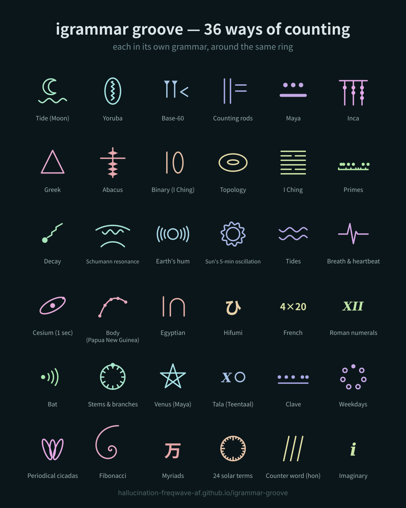

募集中OPEN CALL
異文法グルーヴ × あなたのリズムigrammar groove × your rhythm
決まりはテンポだけ、BPM 120。何拍で一周するかは自由。ティーンタールの16拍でも、12拍のベルでも、7拍でも。集まった演奏だけを重ねて、人と人の間に生まれる「第3の拍」を聴く。お互いに「ええな」と思えたら、パラグルビートの映像にする。 The only rule is the tempo: 120 BPM. Your cycle is up to you — Teentaal 16, a 12-beat bell, 7, anything. We layer only the human performances and listen for the "third beats" born between people. If we both like it, it becomes a Para grooveat video.